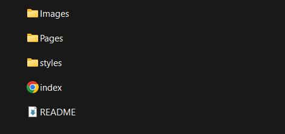

Blog Week 2: Unveiling the Enchantment
Folder Structure
- Root Folder
- index.html (or main entry point)
- css/ (folder for cascading style sheets)
- js/ (folder for JavaScript files)
- images/ (folder for images used on the website)
- pages/ (folder for individual HTML pages if the site is multi-page)
I've done my folder sturcture in this way to mainly keep to the conventional layout of a websites folder structure. In our first class Hanli said that when working with other dev's in this space , you have to recognise that everyone will have different ideas of how they want the website to look , but one thing everyone should agree on is the structure of the project. This is so it is almost a universal langague across everything that is happening in the project
URL Scheme
The URL scheme for my website consists of my github page which is the hub to all things within my website. It is showing off the works of my life
and my works as a student. The course of interactive media has given me a platform to share my passions and opinions.
It is my way of sharing my perspectives and leading you on a path through my mind and how I think as see things. Using the platform of the classes GIT I am collabing with multiple devs to create a portfolio of multiple different personalaities.
This can all be accessed here: My GitHub
Inspo Websites
- Sector32 - This Website is one of the coolest projects I have ever laid eyes on , I believe it is done in .net code so I wouldn't exaclty be able to replicate this 1 for 1 but couldn't hurt to try huh.
- Sophie Britt Quite easily one of my main inspo's for my portfolio , the minimalism while also learning so much about the person strikes a perfect balance between what I want to mirror on my own website.